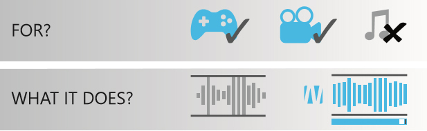

Audio

Surround sound
Highly Immersive 7.1
Feels like the sound is coming from all around you. No matter the quality and type of your audio device, Nahimic will always provide you the best immersive audio experience
Nahimic audio software offers an incredible high definition sound technology which boosts the audio and voice performance of your gaming computer. Enjoy an immersive virtual 7.1 sound through your standard stereo equipment!
Sound is a major part of your gaming experience.
Live intensively the game thanks to a unique sound!
Use your headphones and experience the audio with and without Nahimic.
Feels like the sound is coming from all around you. No matter the quality and type of your audio device, Nahimic will always provide you the best immersive audio experience


It’s a smart volume stabilizer, that guarantees a comfortable listening by permanently adjusting differences in level for the best performance at all volumes
In order to get a crispy dialog from a movie or game, our advanced audio technology identifies and treats the center sound information, where dialogs are located
Bass Boost audio feature delivers deep low frequency that punches some live feeling like explosion, engine, beats, etc.
This sound effect enhances the high frequencies, that you can perceive all details in your game or movie. A real advantage to clearly hear the location of footsteps or gunshots in your game
Nahimic guarantees the perfection of your voice transmissions.
Your team will hear you loud and clear, giving you a huge advantage in the battlefield.
Our noise suppression technology improves communication clarity and quality by drastically removing static noises like the ones generated by electronic devices (fans)
This algorithm was made to prevent the nearby microphone from recording any sound reflected from the loudspeakers. Your conversation is now echo free !
This extreme beamforming function allows to focus only in the voice signal in front of the microphone. It removes stationary noise from outside this beam, thus your conversation with your mate becomes extremely clear
Voice stabilizer is an audio feature that is adjusting dynamically the variation of your voice. It ensures an intelligible conversation with your mates
Based on it state-of-the-art Surround Sound Technology, the unique patented Sound Tracker provides a visual indication that permits better localization of the sounds while in the game. New to a game ? The Sound tracker acts like a radar in your game and will be your best ally to navigate through an unfamiliar environment.
The Sound Tracker is made of moving beams in a round radar. Easy configure its position, size, colour, and transparency for an optimal in-game integration.
Customize the radar that best matches the environment of your game and display it in the perfect spot on your screen (depending on the game) for maximum visual comfort